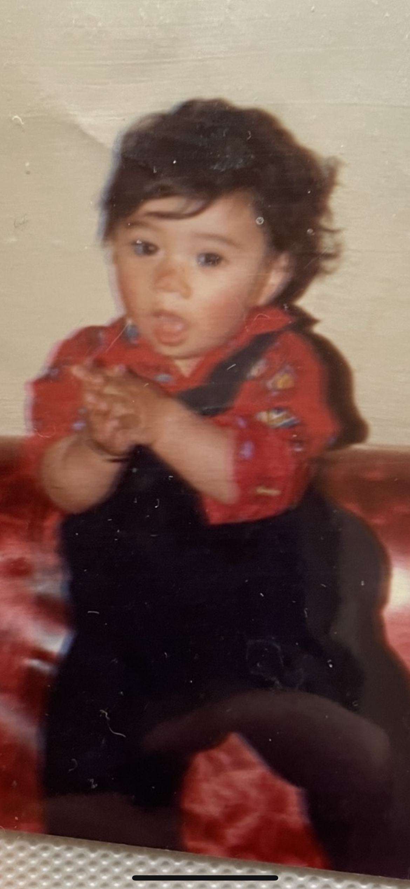
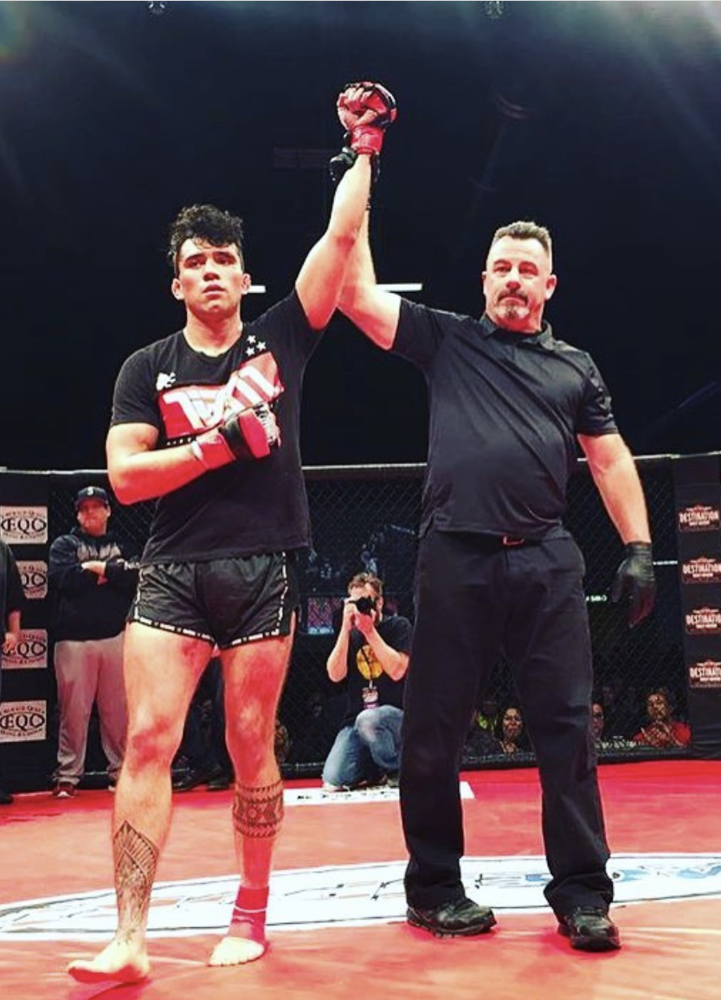

Bio
Child Hood
I grew up in Los Angeles, CA. From a young age I showed interest in technology and combat sports. I have two siblings. My youngest (male)
recently graduated college with a Computer Science degree.
I competed in Combat Sports as a teenager. I didn't know it
then, but I would end up making a career
out of it.
Military Career

Since I can remember,
I wanted to be an Infantry Man. I joinded at 19 years old. After basic training it would be 5 months before deploying to Afghanistan June 29 2011.
Fight Career
Fighting has always been part of my being. Growing up in combat sports or fighting in Afghanistan. When I got back I needed and outlet to help me stay ZEN. I went back to my competitive fight roots. It has given me the oppotunity to travel all over the world. Is as important as H2O in my life.
Why Coding?

During COVID I lost my job. I had enough money to stay home and acquire a new skill. Programing fell into my lap and even tho I am still learning the basics, I naturaly am drawn to it. I enjoy all the posibilities one can create because of it. I have made a few games following along. mostly bc I don't fully
get JavaScript..... Yet, Looking forward to learning and creating in the up coming months.